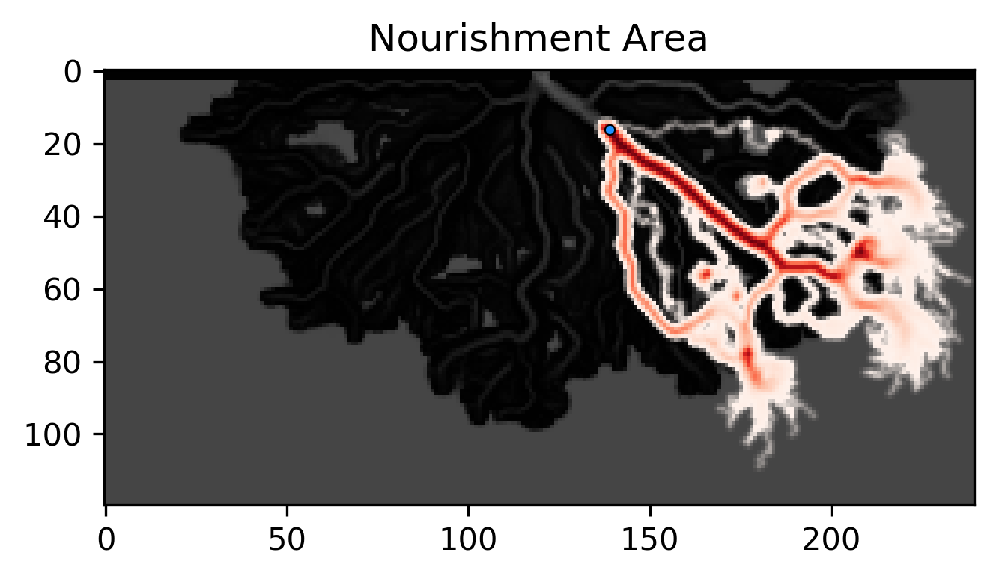
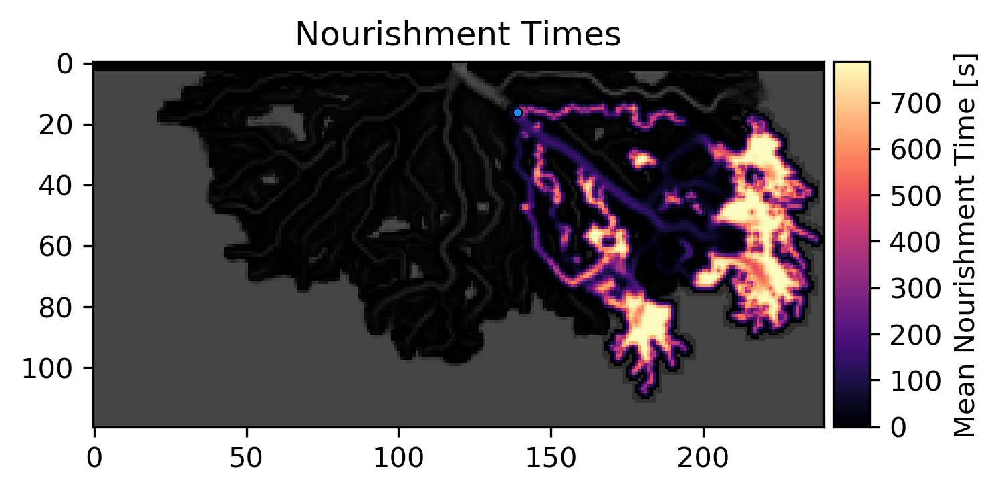

Example 14 - Nourishment Area and Time Functions¶
In this example, we analyze the travel history of a particle injection by computing the “nourishment area” and “nourishment time” for a given seed location.
Full example script available here.
We will again make use of the DeltaRCM example data used in Example 02 — Infiltration & Redistribution in Clay-Loam, but in this case we will slightly change the settings used in the random walk. In particular, this time we will include discharge fields, in order to obtain more useful travel time information.
Now we will create the parameter class and assign attributes to it.
Now that the parameters have all been defined, we will define the particles class and generate a set of particles.
Now, we will route the particles for 120 iterations. Notice that we have used more particles and iterations than in Example 02 — Infiltration & Redistribution in Clay-Loam – this helps us obtain more statistically representative results later on.
Now that we have an existing walk_data dictionary, let’s visualize some bulk information about the travel history. First, we can compute which regions of the domain were most visited by particles. This metric is often referred to as the Nourishment Area (e.g. Liang et al., 2016, doi.org/10.1002/2015JF003653) of a sample location, as it represents regions which are “nourished” by material from that location. We can compute how frequently cells were visited by particles using the nourishment_area function, and visualize the results using the show_nourishment_area routine.
The result is visualized in the figure above. Flow depth serves as the background in this figure, on top of which the Nourishment Area is shown, with regions colored by how frequently each cell was occupied by particles. Because we are often interested in where particles can go in general, rather than exactly where they have gone, by default this function will perform a small amount of Gaussian filtering, to smooth out some of the stochasticity in the travel paths. This smoothing can be turned off or ramped up depending on the application. Additionally, the plotting routine comes with many optional settings which can be used to change the aesthetics of the resulting figure.
Because the Nourishment Area is a time-integrated measure of where particles are going, we may also want to know how long particles tend to stay there once they get there. For this question, we have provided a second function, which we are calling the Nourishment Time, which computes how long on average particles spend in each cell they travel through. In steady model runs (such as this one), the result is trivially related to the flow velocity of each cell – however, for unsteady runs, in which the underlying flow field might be changing in between particle iterations, the results of this function can be more interesting.
Similar to before, we compute this by calling on the nourishment_time function, and visualize the results using the show_nourishment_time routine.
The result is visualized above. As with the previous function, some amount of spatial filtering has been applied. From comparing these two figures, some interesting trends emerge. For example, even though the main distributary channels are frequently visited by particles, the particles on average don’t spend very much time there. Depending on the material or question of interest, perhaps these can provide useful insights!